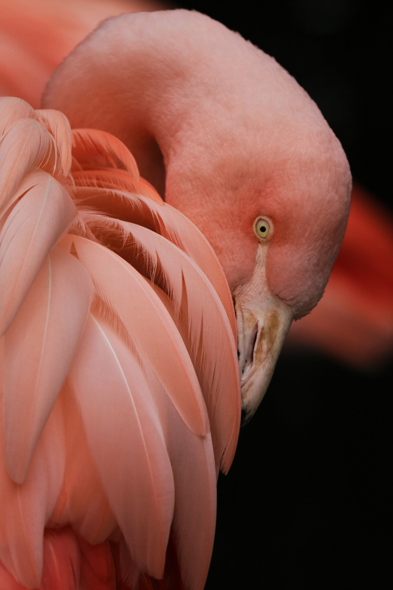

Frankfurt
State of Hesse
Frankfurt am Main
The city is the heart of the larger Rhine-Main metropolitan region, which has a population of more than 5.8 million and is Germany's second-largest metropolitan region after the Rhine-Ruhr region. Frankfurt's central business district, the Bankenviertel, lies about 90 km (56 mi) northwest of the geographic center of the EU at Gadheim in Lower Franconia. Like France and Franconia, the city is named after the Franks. Frankfurt is the largest city in the Rhine Franconian dialect area.


"We can't choose where we come from but we can choose where we go from there"
Main River
The paths along the Main River are among the best places to run in Frankfurt. The Main is the longest right tributary of the Rhine, with the older part of the city (Altstadt) on the north bank, and the ‘Museum Embankment’ highlighting the south bank. We’ve mapped a central 8 km loop, plus additional options. There are some 10 bridges (brücke) that can be crossed between Highway 661 (Kaiserleibrücke) and Highway 5 (Europabrücke).
Lake Titisee
Lake Titisee is very much of the Black Forest's tourism hotspots. The short stretch from the train station down to the lakeshore and boat rental locations is filled with stores selling souvenirs, Black Forest ham and cuckoo clocks aimed at the steady stream of excursion buses full of tourists which arrive during the day in high summer. The tourist office reckons on around two million visitors each year.Luckily it is not difficult to find some peace and quiet and enjoy the lovely scenery in the area.
Main Tower
Main Tower is a 56-story, 665,522-square-foot office tower located in Frankfurt, Germany. Soaring 656 feet above the street, Main Tower is the fifth tallest building in Europe. Featuring fully operable windows throughout the building and many other energy saving features, Main Tower established a new architecural and energy saving standard in the Frankfurt marketplace.
Frankfurt
The Frankfurt Zoological Garden was founded back in the 1850s at the initiative of the local citizens. Today it comprises the territory of more than 13 hectares in the center of Frankfurt and is one of the largest zoos in the Europe.
Zoo
During World War I, the zoo fell into decay due to the abrupt cutback of the incomes. Nevertheless, even in such dull and tragic times, it didn’t stop its participation in the movement for saving rare animal species and vanishing kinds of plants.